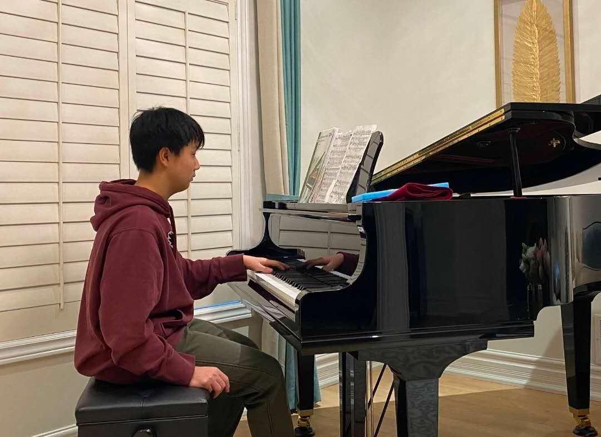
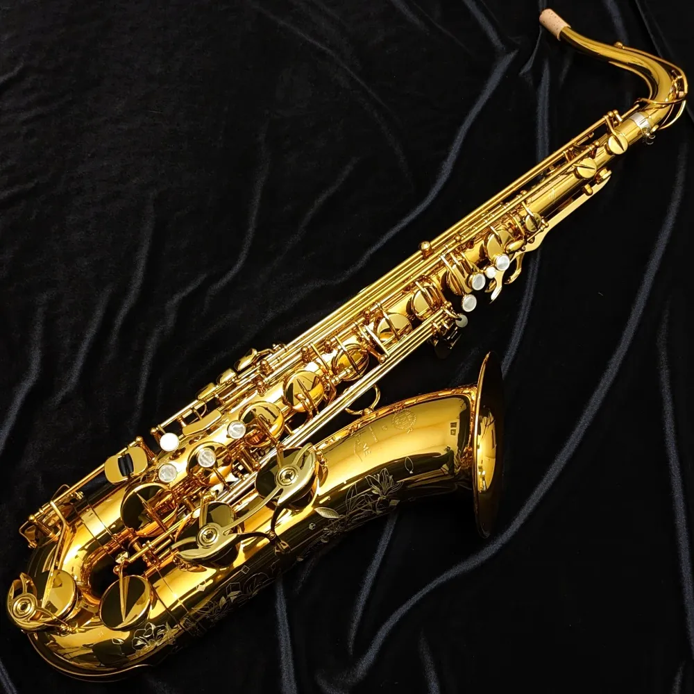
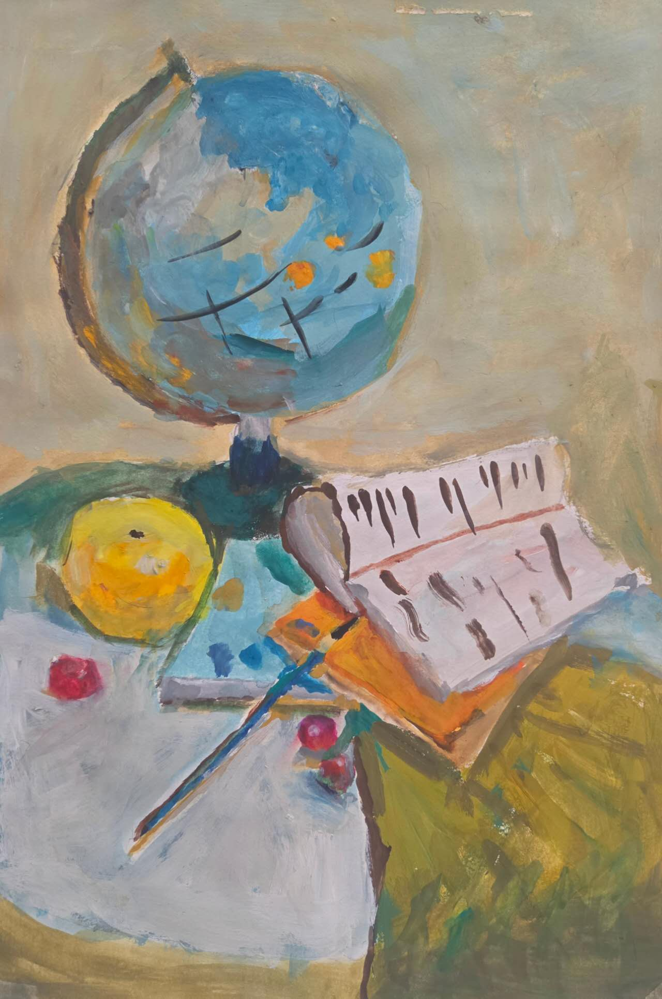
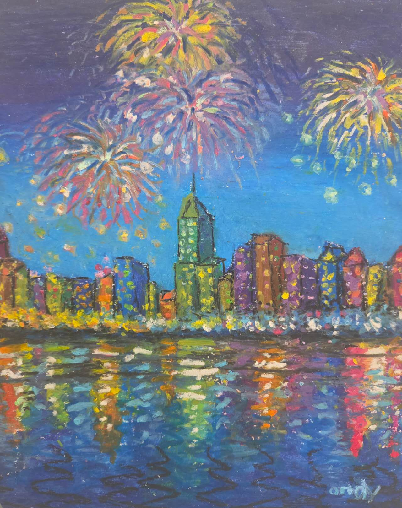

In my headphones
Music I listen to
Music is almost always somewhere in the background for me. What I listen to changes a lot depending on my mood, but most of it falls somewhere around indie pop, pop rock, and pop punk.
The 1975 is often the more atmospheric, chill, indie side of what I listen to. All Time Low is the louder, more energetic pop-punk side. I like moving between the two.
On repeat
The 1975
Favorite album: Being Funny in a Foreign Language
Favorite songs- About You
- If You’re Too Shy (Let Me Know)
- The Sound
All Time Low
For the louder side of things.
Favorite albums- Don’t Panic
- Wake Up, Sunshine
Other rotation
A few more artists I rotate through depending on my mood.
Artists- Valley
- The Band CAMINO
- COIN

At the keys
Piano
I've played piano for around twelve years. These days I mainly play it as a hobby—something I come back to when I want to relax, rest, or clear my mind.
I completed RCM Level 10, and I still play today. I enjoy having a reason to sit down and slow down for a while.
From my school band days
Tenor saxophone
I played tenor saxophone for about three years at school, starting in Junior Concert Band and later joining Senior Concert Band. I’m not in concert band now, but it’s part of my musical background.

Room for something else
Art

